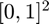

cubBayesNet_g
Bayesian cubature method to estimate the integral of a random variable using digital nets over a d-dimensional region within a specified generalized error tolerance with guarantees under Bayesian assumptions. Currently, only Sobol points are supported.
Contents
Syntax
[OBJ,Q] = cubBayesNet_g(f,dim,'absTol',absTol,'relTol',relTol, 'order',order,'arbMean',arbMean)
[OBJ] = cubBayesNet_g(f,dim,'absTol',absTol,'relTol',relTol,... 'order',order,'arbMean',arbMean)
[Q,OutP] = compInteg(OBJ)
[OBJ,Q] = cubBayesNet_g(f,dim)
[OBJ,Q] = cubBayesNet_g(f,dim,absTol,relTol)
[OBJ,Q] = cubBayesNet_g(f,dim,inParams)
Description
[OBJ,Q] = cubBayesNet_g(f,dim,'absTol',absTol,'relTol',relTol,... 'order',order, 'arbMean',arbMean); initializes the object with the given parameters and also returns an estimate of integral Q.
[Q,OutP] = compInteg(OBJ) estimates the integral of f over hyperbox using digital nets (Sobol points) to within a specified generalized error tolerance, tolfun = max(abstol, reltol*| I |), i.e., | I - Q | <= tolfun with confidence of at least 99%, where I is the true integral value, Q is the estimated integral value, abstol is the absolute error tolerance, and reltol is the relative error tolerance. Usually the reltol determines the accuracy of the estimation; however, if | I | is rather small, then abstol determines the accuracy of the estimation.
It is recommended to use compInteg for estimating the integral repeatedly after the object initialization.
OutP is the structure holding additional output params, more details provided below. Input f is a function handle that accepts an n x d matrix input, where d is the dimension of the hyperbox, and n is the number of points being evaluated simultaneously.
The following additional input parameter passing styles also supported:
[OBJ,Q] = cubBayesNet_g(f,dim); estimates the integral of f over hyperbox using digital nets (Sobol points). All other input parameters are initialized with default values as given below. Returns the initialized object OBJ and the estimate of integral Q.
[OBJ,Q] = cubBayesNet_g(f,dim,absTol,relTol); estimates the integral of f over hyperbox using digital nets (Sobol points). All parameters should be input in the order specified above. The answer is given within the generalized error tolerance tolfun. All other input parameters are initialized with default values as given below.
[OBJ,Q] = cubBayesNet_g(f,dim,inParms); estimates the integral of f over hyperbox using digital nets (Sobol points). The structure inParams shall hold the optional input parameters.
Input Arguments
- f --- the integrand
- dim --- number of dimensions of the integrand
Optional Input Arguments
- absTol --- absolute error tolerance | I - Q | <= absTol. Default is 0.01
- relTol --- relative error tolerance | I - Q | <= I*relTol. Default is 0
- arbMean --- If false, the algorithm assumes the integrand was sampled from a Gaussian process of zero mean. Default is 'true'
- alpha --- confidence level for a credible interval of Q. Default is 0.01
- mmin --- min number of samples to start with: 2^mmin. Default is 8
- mmax --- max number of samples allowed: 2^mmax. Default is 20
Output Arguments
- n --- number of samples used to compute the integral of f.
- time --- time to compute the integral in seconds.
- exitFlag --- indicates the exit condition of the algorithm:
- 1 - integral computed within the error tolerance and without exceeding max sample limit 2^mmax
- 2 - used max number of samples and yet not met the error tolerance
- ErrBd --- estimated integral error | I - Q |
- optParams --- optional parameters useful to debug and get better understanding of the algorithm
- optParams.aMLEAll --- returns the shape parameters computed
Guarantee
This algorithm attempts to calculate the integral of function f over the hyperbox to a prescribed error tolerance tolfun:= max(abstol,reltol*| I |) with guaranteed confidence level, e.g.,99% when alpha=0.5%. If the algorithm terminates without showing any warning messages and provides an answer Q, then the following inequality would be satisfied:
Pr(| Q - I | <= tolfun) = 99%
Please refer to our paper [1] for detailed arguments and proofs.
Examples
Example 1: Quadratic
Estimate the integral with integrand over the interval with default parameters: order=1, abstol=0.01, relTol=0
warning('off','GAIL:cubBayesNet_g:fdnotgiven') [~,muhat] = cubBayesNet_g; exactInteg = 1.0/3; warning('on','GAIL:cubBayesNet_g:fdnotgiven') check = double(abs(exactInteg-muhat) < 0.01)
check =
1
Example 2: ExpCos
Estimate the integral with integrand over the interval  with parameters: order=2, abstol=0.001, relTol=0.01
fun = @(x) exp(sum(cos(2*pi*x), 2));
dim=2; absTol=1e-3; relTol=1e-2;
exactInteg = besseli(0,1)^dim;
inputArgs = {'absTol',absTol,'relTol',relTol};
[~,muhat]=cubBayesNet_g(fun, dim, inputArgs{:});
check = double(abs(exactInteg-muhat) < max(absTol,relTol*abs(exactInteg)))
check =
1
Example 3: Keister function
Estimate the Keister's integrand, a multidimensional integral inspired by a physics application over the interval with parameters: order=2, abstol=0.001, relTol=0.01
dim=2; absTol=1e-3; relTol=1e-2; normsqd = @(t) sum(t.*t,2); %squared l_2 norm of t replaceZeros = @(t) (t+(t==0)*eps); % to avoid getting infinity, NaN yinv = @(t)(erfcinv( replaceZeros(abs(t)) )); ft = @(t,dim) cos( sqrt( normsqd(yinv(t)) )) *(sqrt(pi))^dim; fKeister = @(x) ft(x,dim); exactInteg = Keistertrue(dim); inputArgs ={'absTol',absTol, 'relTol',relTol}; inputArgs =[inputArgs {'arbMean',true}]; [~,muhat]=cubBayesNet_g(fKeister,dim,inputArgs{:}); check = double(abs(exactInteg-muhat) < max(absTol,relTol*abs(exactInteg)))
check =
1
Example 4: Multivariate normal probability
For , estimate the following probability:
Given and with zero mean and covariance .
C = [4 1 1; 0 1 0.5; 0 0 0.25]; MVNParams.Cov = C'*C; MVNParams.C = C;
MVNParams.a = [-6 -2 -2]; MVNParams.b = [5 2 1]; MVNParams.mu = 0;
MVNParams.CovProp.C = chol(MVNParams.Cov)';
muBest = 0.676337324357787;
integrand =@(t) GenzFunc(t,MVNParams);
inputArgs={'absTol',absTol,'relTol',relTol};
inputArgs=[inputArgs {'arbMean',true}];
obj=cubBayesNet_g(integrand,dim, inputArgs{:});
[muhat,outParams] = compInteg(obj);
check = double(abs(muBest-muhat) < max(absTol,relTol*abs(muBest)))
etaDim = size(outParams.optParams.aMLEAll, 2)
check =
1
etaDim =
1
See Also
References
[1] Jagadeeswaran Rathinavel, "Fast automatic Bayesian cubature using matching kernels and designs," PhD thesis, Illinois Institute of Technology, 2019.
[2] Sou-Cheng T. Choi, Yuhan Ding, Fred J. Hickernell, Lan Jiang, Lluis Antoni Jimenez Rugama, Da Li, Jagadeeswaran Rathinavel, Xin Tong, Kan Zhang, Yizhi Zhang, and Xuan Zhou, GAIL: Guaranteed Automatic Integration Library (Version 2.3.1) [MATLAB Software], 2020. Available from http://gailgithub.github.io/GAIL_Dev/
[3] Jagadeeswaran Rathinavel, "Fast automatic Bayesian cubature using matching kernels and designs," PhD thesis, Illinois Institute of Technology, 2019.
If you find GAIL helpful in your work, please support us by citing the above papers, software, and materials.